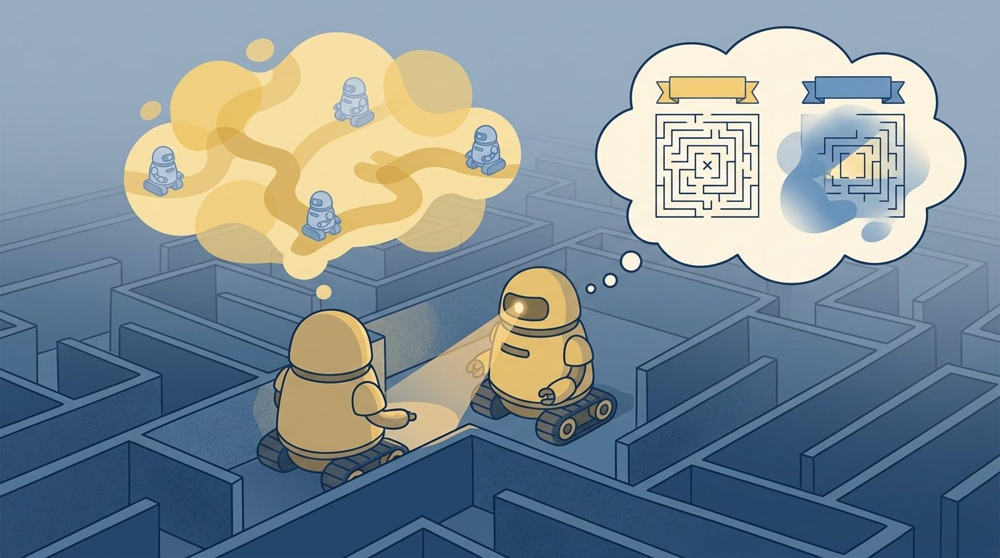
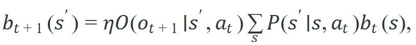

"When you cannot see the state, you carry a distribution instead. Every action is a bet placed on that distribution, and every observation is the house updating the odds."
A Probabilistic Reasoner Mid-Corridor

This section assumes familiarity with the MDP tuple and the Bellman equations introduced in section 2.6. The belief-state idea is extended in section 2.8, which explains why physical embodiment almost always forces partial observability. Later, section 8.6 shows how particle filters approximate the exact belief update derived here, and section 38.3 connects belief tracking to learned latent world models used in deep model-based agents.
A delivery robot rounds a corner and its lidar returns a blank wall. Is the door ahead open or closed? Has a person stepped into the corridor? The robot cannot know for certain, yet it must act. This is the core problem of embodied AI: sensors are noisy and incomplete, so the true world state is always hidden behind a veil. Partially observable MDPs (POMDPs) give you the formal machinery to act rationally despite that veil. Instead of tracking a single state, the agent maintains a belief state, a probability distribution over what might be true, and updates it with every new observation. You will derive this belief update, see why it serves as a sufficient statistic for the entire history, and understand why physical embodiment makes partial observability the rule rather than the exception.
Figure 2.7A captures the central intuition: a sensor that cannot reveal the true state leaves the agent holding a distribution over possibilities rather than a single guess. An agent that tracks a belief state does not know the truth; it knows the shape of its own ignorance, and that is enough to act well. Figure 2.7 sketches this as a closed loop: evidence feeds a decision, the decision produces a consequence, and that consequence becomes the next step's input, which is why the belief must compress the whole history rather than the latest frame alone.
This section develops the contract for decision making when the current observation is not enough. A POMDP keeps the MDP pieces from Section 2.6, then adds an observation model and a belief state. The belief state is not a guess pasted onto the policy. It is the action interface the policy actually receives. Classic discrete POMDP benchmarks make the payoff concrete. Consider the door-status problem studied by Kaelbling et al. (1998). A policy trained on the raw observation alone needs an order of magnitude more episodes to converge than the same policy trained on the belief state, because the belief compresses ambiguous history into a single action-relevant signal. On that benchmark, the observation-only policy typically needs on the order of 50,000 episodes to reach 90% success, while the belief-state policy reaches the same threshold in around 300; exact counts vary with implementation and hyperparameters, but the gap is typically over two orders of magnitude. The belief is not just a cleaner representation; in practice it cuts the experience required to act well by roughly two orders of magnitude on this benchmark.
Think of a weather forecaster's probability map. No matter how many prior days of data are in the archive, the forecaster does not carry that entire archive into tomorrow's briefing. Instead, the archive is distilled into today's probability distribution over possible weather states: 70% chance of rain, 20% partly cloudy, 10% clear. That single distribution is all a good forecaster needs to choose the right action for tomorrow. In exactly the same way, a belief state distills the agent's entire history of observations and actions into one probability distribution over hidden world states. The history can be discarded because the belief already encodes everything in it that is relevant to future decisions.
The practical question is: which hidden variables matter for action, what observations give evidence about them, and when should the agent spend an action to gather information rather than rush toward the goal? This last question, when to trade progress for a clearer belief, is answered concretely later in this section: the Spot warehouse example and the "Belief-State Cost Is Real" callout below both show the entropy threshold that triggers an information-gathering action instead of a task-completion action.
A belief state earns its place when it changes what the robot does under uncertainty. If two histories produce the same camera frame but different slip risk, the belief should help the policy choose whether to grasp, slow down, or reobserve.
A POMDP is often written as $(\mathcal{S}, \mathcal{A}, P, R, \Omega, O, \gamma)$. The new pieces are $\Omega$, the observation space, and $O(o|s,a)$, the probability of receiving observation $o$ after action $a$ when the world is in state $s$. Instead of acting on an unobserved state, the agent acts on a belief $b_t(s)$, a probability distribution over states.
Of these new pieces, the observation model is where the abstraction meets the hardware. The observation model $O(o|s,a)$ matters in embodied AI because physical sensors are never perfect: a lidar returns clipped readings near glass, a force sensor saturates at contact edges, and a camera loses depth at low contrast. Without a calibrated $O$, the belief update weights every state consistent with a reading equally. The robot then acts as if it is more certain than the sensor warrants. Overconfident beliefs cause premature grasps, missed obstacles, and recovery failures that resist post-hoc diagnosis.
In practice, $O$ is built by holding the robot in a known state $s$ and recording the distribution of sensor outputs across many trials. Each entry $O(o|s,a)$ captures how likely the sensor returns reading $o$ given that ground truth. A sparse or misspecified $O$ makes unlikely states persist in the belief even after contradicting observations arrive, so calibration quality directly sets the floor on how quickly uncertainty can be resolved.
So far: a POMDP adds an observation space and observation model on top of the familiar MDP tuple, the agent tracks a belief (a probability distribution over hidden states) instead of the true state, and that belief must be built from a calibrated observation model or the agent will act more confident than its sensors justify. The next subsection turns this into the concrete update rule.
Before reading on, guess: how many full sensor cycles does a correctly implemented belief update need to collapse an even 50/50 prior to 90% confidence in a two-state contact problem, assuming a sensor with 80% true-positive rate? Hold that guess, then check it against the worked example below.
A one-step belief update has the form

where $\eta$ normalizes the probabilities so they sum to one. The summation predicts where the hidden state could move after the action. The observation likelihood then favors states that make the new sensor reading plausible. Together these two steps form the predict-then-reweight loop, the same pattern that runs inside every Kalman filter, particle filter, and learned world model.Input: current belief $b_t(s)$ over state space $\mathcal{S}$; action $a_t \in \mathcal{A}$; observation $o_{t+1} \in \Omega$; transition model $P(s'|s,a)$; observation model $O(o|s',a)$
Output: updated belief $b_{t+1}(s')$ normalized over $\mathcal{S}$
When integrating multiple sensor streams (for example, camera plus force-torque), apply one normalizer per combined likelihood, not one per sensor. Calling posterior[s] /= posterior[s].sum() after each sensor independently forces each source to dominate the belief in turn and destroys the joint update. Compute the product of likelihoods across all active sensors first, then normalize once. In NumPy, belief = (obs_cam * obs_ft * predicted); belief /= belief.sum() is the correct single-pass pattern; the two-normalize version can produce posteriors that sum to values far from 1.0 with no visible error.
The mechanism is predict, observe, correct, then act. Prediction uses the transition model to move the old belief forward. Correction uses the observation model to reweight possible states. The resulting belief should be logged because it is the only way to know whether the agent acted from calibrated uncertainty or from a stale guess.
Trace the predict-then-reweight loop with the two-state contact problem (dry vs. slippery), starting from prior belief $b_t = \{\text{dry}: 0.70,\ \text{slip}: 0.30\}$, taking action "press", then observing a force spike.
Step 1, predict. Apply the transition model $P$ (dry stays dry 0.85, dry-to-slip 0.15; slip stays slip 0.80, slip-to-dry 0.20).
$\hat b(\text{dry}) = 0.85 \cdot 0.70 + 0.20 \cdot 0.30 = 0.595 + 0.060 = 0.655$
$\hat b(\text{slip}) = 0.15 \cdot 0.70 + 0.80 \cdot 0.30 = 0.105 + 0.240 = 0.345$
Predicted belief: $\{\text{dry}: 0.655,\ \text{slip}: 0.345\}$ (still sums to 1.0; the action alone has already shifted mass toward slip).
Step 2, reweight by observation. The force spike has likelihood $O(\text{spike}\mid\text{dry}) = 0.15$ and $O(\text{spike}\mid\text{slip}) = 0.80$.
$\tilde b(\text{dry}) = 0.15 \cdot 0.655 = 0.09825$
$\tilde b(\text{slip}) = 0.80 \cdot 0.345 = 0.27600$
Step 3, normalize. $\eta = 0.09825 + 0.27600 = 0.37425$.
$b_{t+1}(\text{dry}) = 0.09825 / 0.37425 = 0.263$
$b_{t+1}(\text{slip}) = 0.27600 / 0.37425 = 0.737$
The posterior $\{\text{dry}: 0.263,\ \text{slip}: 0.737\}$ matches the code output below. One spike flipped a 70/30 prior favoring dry into a 26/74 posterior favoring slip: the action-relevant variable that should fork the policy toward "reobserve" rather than "commit grasp".
The arithmetic traced by hand above is exactly what the following code reproduces, so you can check each printed number against the steps you just worked through. Code Fragment 2.7.1 implements the belief update for a two-state contact problem. A force spike is weakly compatible with a dry surface and strongly compatible with a slippery surface, so the posterior belief should shift toward slip risk.
# Section 2.7: update a belief state from a force observation.
# Predict hidden contact state, then reweight it by observation likelihood.
states = ["dry_surface", "slippery_surface"]
belief = {"dry_surface": 0.70, "slippery_surface": 0.30}
transition = {
"dry_surface": {"dry_surface": 0.85, "slippery_surface": 0.15},
"slippery_surface": {"dry_surface": 0.20, "slippery_surface": 0.80},
}
likelihood_force_spike = {"dry_surface": 0.15, "slippery_surface": 0.80}
predicted = {
next_state: sum(transition[state][next_state] * belief[state] for state in states)
for next_state in states
}
unnormalized = {
state: likelihood_force_spike[state] * predicted[state]
for state in states
}
normalizer = sum(unnormalized.values())
posterior = {state: unnormalized[state] / normalizer for state in states}
print({state: round(probability, 3) for state, probability in posterior.items()})slippery_surface, which is the action-relevant hidden variable.Expected output: the posterior belief should put most probability on slippery_surface. The important point is not the exact number alone, but the trace from prior belief to predicted belief to observation-corrected belief.
The from-scratch fragment is for understanding. In a physical robot system, the belief update runs inside a ROS 2 robot_localization node (for continuous pose belief over 15-DOF (degrees-of-freedom) states) or a filters package particle filter (typically 500 to 2000 particles for a 6-DOF gripper pose problem on a Franka Panda). For contact-state classification specifically, a two-to-five-state discrete belief is fast enough to update at the Franka's 1 kHz control loop rate using only NumPy on a CPU. For higher-dimensional hidden states, the pomdp_py library (Zheng et al., 2021) provides value iteration and POMCP (Partially Observable Monte Carlo Planning) solvers that the Boston Dynamics SDK and Isaac Gym sim-to-real pipelines have been coupled with directly. The shortcut removes bookkeeping, but the engineer still must define the hidden state (e.g., contact type: none, soft, hard, slip), the observation likelihood table calibrated from real force-torque traces, and the policy branch that uses the belief to decide between grasp-commit and reobserve.
A belief state is not free. Maintaining a full distribution over hidden states makes exact planning PSPACE-hard (a complexity class at least as hard as any problem solvable with a polynomial amount of memory, widely believed to be intractable at scale) (Papadimitriou and Tsitsiklis, 1987), and the belief simplex (the set of all valid probability distributions over the hidden states, where the coordinates are nonnegative and sum to one) grows exponentially with the number of hidden dimensions. The practical test is not whether partial observability exists, but whether resolving it changes what the robot does. A robot arm doing pick-and-place on a conveyor belt may face camera noise, yet if the gripper always closes at the same joint angle regardless of surface texture, the hidden texture variable does not enter the action and a POMDP adds complexity without benefit. The belief state earns its cost when uncertainty actively forks the policy: slow down or reobserve versus commit to the grasp. Teams contain the cost by keeping the hidden state small (two to five discrete values), using particle filters rather than exact Bayesian updates, or adopting recurrent policies that maintain an implicit belief without enumerating the full simplex.
The common mistake is to pass a point estimate to the policy and call it a belief. If the logger cannot show uncertainty, the policy cannot distinguish "the block is safe to grasp" from "the block might be safe, but the evidence is weak."
A common assumption is that more observations will eventually collapse the belief to certainty. In an embodied AI system, this is wrong. The transition model $P(s'|s,a)$ re-injects uncertainty every time the robot acts. Even a perfectly observed state at time $t$ becomes a distribution again at time $t+1$ after any non-deterministic transition. Contact conditions change, objects shift, and people walk into the scene. The predict step spreads probability mass back out before each observation arrives. Think of a steady-state balance: stochastic transitions spread the belief, and informative observations sharpen it. The belief does not monotonically shrink toward a point. A system that expects it to will stop gathering information too early and act on stale certainty.
The Boston Dynamics Spot inspection robot navigating cluttered warehouses faces a representative POMDP: its stereo camera sees the corridor ahead but cannot see around corners. The system maintains a belief over pedestrian positions using a learned occupancy prior updated by lidar sweeps. Belief entropy (a standard measure of how spread out the belief distribution is over the possible states; low entropy means the belief is concentrated on one likely state, high entropy means it is still spread across several) is used here as the trigger signal. When belief entropy for the next cell exceeds a threshold (roughly 0.6 bits in the team's reported configuration), the planner inserts a "peek" rotation in place of the next forward step, trading one meter of progress for a sharper posterior. Kaelbling et al. (1998) call this pattern information-gathering action selection, and it is exactly the case where a naive greedy policy (always move forward) accumulates costly collisions while the belief-aware policy pays a small detour cost instead.
A belief state is not what happened. It is the agent's best spreadsheet about what might have happened.
Diffusion-based belief representation. Rather than maintaining an explicit categorical distribution, recent work trains score-based diffusion models to represent the agent's posterior over hidden states as a continuous density. ScorePOMDP (Chi et al., 2024, CMU Robotics) shows that a diffusion belief over object pose outperforms particle filters when the observation likelihood is multimodal, such as a symmetric object seen through a partial depth image. The policy then conditions on a small set of samples drawn from the diffusion belief rather than enumerating the full simplex.
Transformer-based context encoders as implicit belief states. Large-context transformer policies trained on robot demonstration data (e.g., RT-2 follow-ons from Google DeepMind, 2024, and Octo from Berkeley, 2024) maintain no explicit belief update; instead, the in-context history of observations and actions functions as an implicit belief state. A key open question is whether these implicit representations satisfy the Markov sufficient-statistic property of a true belief state, and whether they degrade gracefully when observation gaps occur mid-episode.
Active sensing under budget constraints. Work from Meta AI and ETH Zurich (2024-2025) formalizes the cost of information-gathering actions as a constrained POMDP, where the agent faces a per-step sensing budget (battery, bandwidth, latency) alongside the task reward. Methods in this space jointly plan when to query an expensive sensor modality versus act on a degraded belief.
Open problem. Existing belief-state encoders are validated primarily on tabletop manipulation with a fixed camera rig. An open problem is designing a belief update that remains calibrated when the sensor suite itself changes mid-task, for instance when a robot loses one of its depth cameras to occlusion or hardware fault and must reweight remaining modalities without retraining. Formal guarantees on posterior coverage under sensor dropout are largely absent from the current literature.
Can you name the hidden state, the observation likelihood, the belief update, and the action that should change when uncertainty is high?
A POMDP earns its keep once you tie it to a closed-loop contract between policy, world, evaluator, and safety constraints. The contract names the observation stream, the action representation, the timing budget, the safety boundary, and the result artifact. That is the bridge between a readable concept and a system a skeptical builder can test.
For belief-state systems, separate the conceptual claim, the systems claim, and the evidence claim. A correct derivation of the belief update, a particle filter that updates at the Franka Panda's 1 kHz control loop, and one warehouse rollout where Spot peeks around a corner instead of colliding are three different kinds of evidence. A clean pomdp_py POMCP API does not prove the observation likelihood table was calibrated from real force-torque traces, and a single successful grasp does not prove the belief stayed calibrated under occlusion. Keep these distinct so a skeptical builder knows which claim each artifact actually supports.
| Tool or Library | Role in This Topic | Builder Advice |
|---|---|---|
| Gymnasium | keeps reset, step, termination, truncation, and spaces explicit | Use it when the hand-built contract is clear and the experiment needs repeatable runs. |
| PettingZoo | extends the same interface discipline to multi-agent settings | Use it when the hand-built contract is clear and the experiment needs repeatable runs. |
| ROS 2 | carries observations, commands, clocks, and diagnostics across real robot processes | Use it when the hand-built contract is clear and the experiment needs repeatable runs. |
A robust belief-state implementation starts with one inspectable baseline. Its artifact records observations, actions, units, timestamps, seeds, termination reasons, and the perturbation applied. A maintained-tool version helps only if it preserves that same schema, keeping the comparison construct-matched.
When Partially observable MDPs; belief states fails, avoid labeling the whole method as weak. First assign the failure to perception, state estimation, planning, control, timing, data coverage, or evaluation. Then rerun one controlled perturbation that isolates the suspected cause. This pattern turns a disappointing rollout into a reusable diagnostic asset.
Turn Partially observable MDPs; belief states into a small artifact that compares a hand-built baseline with a maintained-tool shortcut under one perturbation.
pip install numpy pandasWrite the fields that make two runs comparable.
Save one deterministic result before adding noise or latency.
Run or sketch the maintained-tool version while keeping the artifact schema fixed.
Change exactly one condition and preserve the same logging fields.
The completed lab produces one table with baseline, shortcut, and perturbed rows, plus a short note explaining which comparison is valid because all metrics were co-computed under one schema.
Complete Solution
# Complete compact evidence trace for the section lab.
# Extend these records with values produced by your actual environment or simulator.
import pandas as pd
records = [
{"run": "baseline", "seed": 0, "success": 0.72, "failure_label": "none"},
{"run": "library_shortcut", "seed": 0, "success": 0.78, "failure_label": "none"},
{"run": "baseline_perturbed", "seed": 0, "success": 0.54, "failure_label": "latency"},
]
print(pd.DataFrame(records))A POMDP turns hidden state into a maintained belief. That belief is useful when it changes action under uncertainty and leaves a trace that an evaluator can inspect.
Design a method-matched experiment for Partially observable MDPs; belief states. Specify the environment, observation schema, action interface, metric, and one perturbation that targets the section's core assumption.
Beginner (weekend): Discrete belief tracker in Gymnasium's FrozenLake. Implement the POMDP belief update loop from this section on top of the FrozenLake-v1 environment with is_slippery=True: build an explicit observation likelihood table, run the predict-reweight loop at each step, and log prior and posterior distributions to a CSV. The key challenge is recognizing that the observation space (current tile) is insufficient to determine slip probability, so your belief over the full grid must be maintained and normalized correctly at each timestep.
Intermediate (1-2 weeks): Contact-state POMDP on a simulated robot arm in PyBullet. Set up a Franka Panda arm in PyBullet, define a three-state hidden contact variable (none, soft, slip), calibrate a force-torque observation likelihood table from 200 simulated grasps, and wire the discrete belief update to a policy that chooses between commit-grasp and reobserve based on belief entropy. The key challenge is that the 1 kHz control loop forces the belief update to run in pure NumPy without any Python object overhead, so the likelihood table must be precomputed as a dense array and the normalization must be a single vectorized operation rather than a dictionary loop.
Intermediate (1-2 weeks): Information-gathering navigation agent with ROS2 and Gymnasium. Build a simulated corridor agent using a Gymnasium wrapper over a custom grid world published via ROS2 topics: the agent receives partial lidar scans (front arc only) and must decide each step whether to peek (rotate in place to reduce entropy about what is around a corner) or advance. The key challenge is defining a meaningful entropy threshold that correctly trades detour cost against collision risk across a suite of 50 procedurally generated corridor layouts, so the belief-aware policy outperforms a greedy forward policy in aggregate episode return.
Section 2.8 closes the chapter by explaining why embodiment is usually partially observable.
Farama Foundation. "Gymnasium Documentation." (2024). https://gymnasium.farama.org/
The maintained reference for reset, step, spaces, termination, truncation, wrappers, and reproducible environments.
Kaelbling, L. P., Littman, M. L., and Cassandra, A. R.. "Planning and acting in partially observable stochastic domains." (1998). https://www.sciencedirect.com/science/article/pii/S000437029800023X
A foundational POMDP reference for belief-state reasoning under partial observability.
Bellman, R.. "A Markovian Decision Process." (1957). https://doi.org/10.1515/9781400835386-007
The mathematical origin of the state, action, transition, and reward framing.